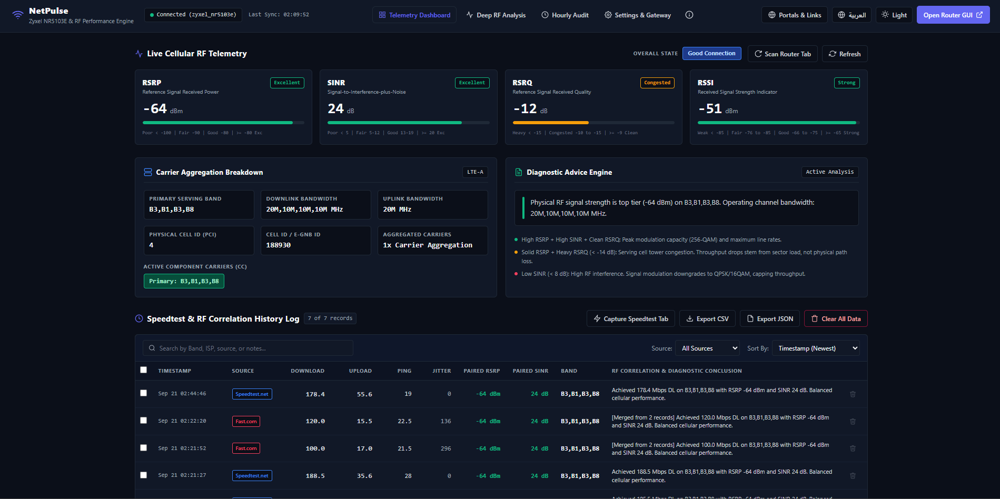
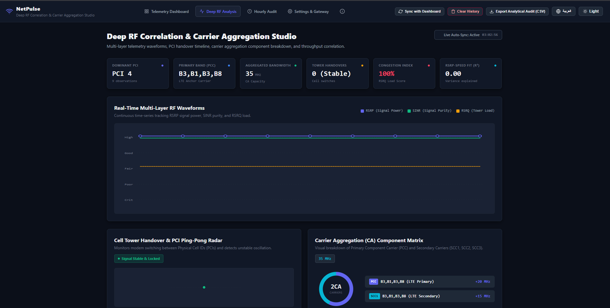
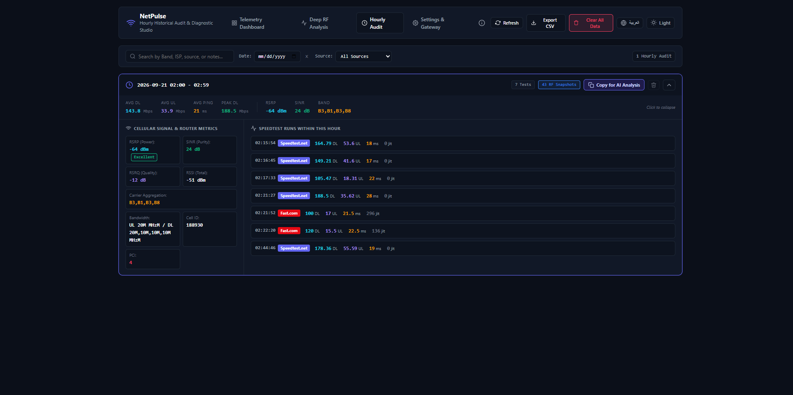
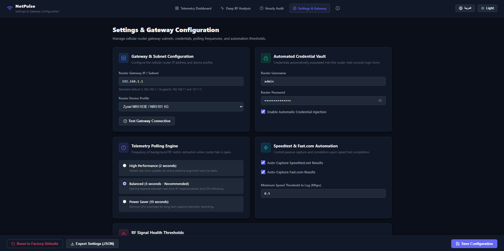

NetPulse Complete Guide & Documentation
Comprehensive technical guide on installation, router RF telemetry extraction, speed test pairing, hourly rollups, AI diagnostic report generation, and gateway configuration.
Overview & Architecture
NetPulse is a Manifest V3 browser extension engineered to bridge physical radio-frequency (RF) cellular signal metrics (RSRP, SINR, RSRQ, RSSI, Cell ID, Bandwidth, Carrier Aggregation) with real network speed benchmarks (Speedtest.net, Fast.com).
Designed specifically for 5G and 4G LTE Fixed Wireless Access (FWA) routers (Zyxel NR5103E, Huawei, ZTE, Nokia, Mikrotik), NetPulse extracts live radio stats without modifying router firmware and pairs each speed test with the exact RF signal snapshot.
Installation & Developer Setup
- Download or clone the repository from GitHub: https://github.com/ZerroDevs/NetPulse
- Open Google Chrome or Microsoft Edge and navigate to chrome://extensions or edge://extensions.
- Enable Developer Mode in the top-right corner of the extensions page.
- Click "Load unpacked" and select the NetPulse directory (or unzip release/NetPulse.zip and select the folder).
- Pin the NetPulse extension icon to your browser toolbar for quick access.
Gateway Default IPs & Auto-Detect Matrix
NetPulse features auto-detection across standard private IP subnets (192.168.*.*, 10.*.*.*, 172.16.*.*). Reference default router addresses below:
1. Telemetry Dashboard
The main dashboard provides real-time RF signal meters, carrier aggregation details, and paired speed test history.

Figure 1: NetPulse Telemetry Dashboard Interface with Live Gauges and Multi-Select Record Merge Bar.
- Live RF Signal Gauges: Real-time visual progress meters for RSRP (Signal Power), SINR (Purity), RSRQ (Tower Load), and RSSI (Signal Level).
- Carrier Aggregation Breakdown: Primary Band (PCC), Physical Cell ID (PCI), Cell ID, Downlink/Uplink Bandwidths, and Secondary Component Carriers (SCC1, SCC2, etc.).
- Multi-Select Record Merge: Select 2 or more log rows using checkboxes to average speed test metrics while retaining paired router signal telemetry.
- Per-Row Delete: Hover over any entry row to reveal the trash icon button and confirm deletion via modal.
- Export Options: Export complete telemetry log history to CSV or JSON format with 1-click.
Signal Quality Reference Chart (RF Benchmark Matrix)
Use this standardized rating matrix to evaluate 5G NR and 4G LTE physical layer radio signal conditions:
| Radio Metric | Excellent | Good | Fair | Poor | Troubleshooting Action |
|---|---|---|---|---|---|
| RSRPSignal Power (dBm) | > -80 dBm | -80 to -95 | -95 to -105 | < -115 dBm | If RSRP < -105 dBm, move router closer to an elevated window facing the nearest cellular tower. |
| SINRSignal Purity (dB) | > 20 dB | 13 to 20 dB | 5 to 13 dB | < 0 dB | If SINR < 0 dB, rotate antenna/router 15° away from interference sources (microwaves, power supplies). |
| RSRQTower Load (dB) | > -10 dB | -10 to -12 dB | -12 to -15 dB | < -15 dB | If RSRQ < -14 dB, the cell tower is congested. Use Band Locking to switch to a less congested secondary band. |
| CQIChannel Quality (0-15) | 13 to 15 | 10 to 12 | 7 to 9 | < 6 | If CQI < 7, connection modulation drops to QPSK. Re-orient router to achieve higher QAM modulation. |
2. Deep RF Correlation Studio
The Deep RF Studio provides advanced visual waveforms and scatter correlation matrices for in-depth network diagnostics.

Figure 2: Deep RF Correlation & Carrier Aggregation Studio with Waveform Timeline and Scatter Quadrants.
- RF Waveform Timeline: Multi-layer continuous time-series tracking RSRP power, SINR purity, and RSRQ tower load.
- PCI Handover Tracker: Monitors tower handovers between Cell IDs to identify cell ping-pong instability.
- Signal vs. Speed Scatter Matrix: Maps RSRP vs. Download speed and SINR vs. Upload speed to isolate cell congestion from radio path loss.
- Live Auto-Sync Engine: Continuously updates waveforms from active router background telemetry.
3. Hourly Audit Studio & AI Prompt Generator
Organizes connection logs into 1-hour time blocks and generates AI diagnostic reports for LLM analysis.

Figure 3: Hourly History Audit Studio showing 1-Hour Accordion Blocks and AI Report Copy Tool.
- Hourly Accordion Blocks: Consolidates tests into 1-hour windows (e.g. 02:00 - 02:59) showing hourly averages and peak speeds.
- 1-Click "Copy for AI Analysis": Formats hourly cellular metrics and speed runs into clean Markdown prompt queries optimized for ChatGPT, Claude, and Gemini.
- Date & Provider Filters: Instantly search history by date or test platform (Speedtest.net vs Fast.com).
- Screenshot Viewer: Click screenshot badges to view full-screen result capture modals.
Official ISP Complaint & AI Prompt Generator
Generate a standardized technical report containing raw RF telemetry snapshots and speed test logs to submit directly to your ISP support or run through ChatGPT / Claude for analysis.
Subject: Technical Escalation - Cellular Signal & Bandwidth Performance Log To ISP Network Engineering Support, Please review the following hardware telemetry audit captured via NetPulse Cellular Gateway Engine: [ROUTER HARDWARE TELEMETRY] - Gateway Router: Zyxel NR5103E / 5G CPE - Serving Cell ID: 28419585 / Physical Cell ID (PCI): 312 - Radio Access Technology (RAT): 5G NR (NSA / SA) + LTE PCC (Band n78 / Band 3) - Signal Power (RSRP): -98.4 dBm (Fair / Degrading) - Signal Purity (SINR): 4.2 dB (High Interference) - Tower Load (RSRQ): -14.1 dB (Severe Cell Congestion) [AUTOMATED SPEEDTEST BENCHMARK LOGS] - 1-Hour Average Download: 24.5 Mbps (Contracted Target: 100+ Mbps) - 1-Hour Average Upload: 3.1 Mbps - Latency / Jitter: 42 ms / 18 ms - Test Provider: Speedtest.net (Ookla Engine) [DIAGNOSTIC REQUEST] 1. Verify if serving Cell ID 28419585 is experiencing high sector utilization or RF interference. 2. Request a sector reset or optimization on Band n78 to resolve throughput throttling.
Frequently Asked Questions & Troubleshooting
Solutions to common questions and troubleshooting steps for router telemetry connections:
Why are signal gauges displaying "N/A"?
Can I run hourly speed tests while my PC is locked?
How do I submit telemetry reports to my ISP for speed complaints?
Is my router model supported?
How do I export historical RF data to CSV or JSON?
4. Settings & Gateway Configuration
Allows users to configure router credentials, polling frequencies, auto-capture rules, and critical RF thresholds.

Figure 4: Settings Studio with Gateway Subnet Configuration, Credential Manager, and Polling Rates.
- Subnet & Router Profile: Support for 192.168.1.1, 192.168.*.*, 10.*.*.*, and device profiles (Zyxel, Huawei, ZTE, Generic).
- Automated Credential Vault: Secure administrative username and password storage with multi-pass reactive form injection.
- Polling Engine Rates: Configurable polling intervals (2 seconds High Performance, 5 seconds Balanced, 15 seconds Power Saver).
- RF Health Threshold Sliders: Customize critical alert warning thresholds for RSRP and SINR degradation.